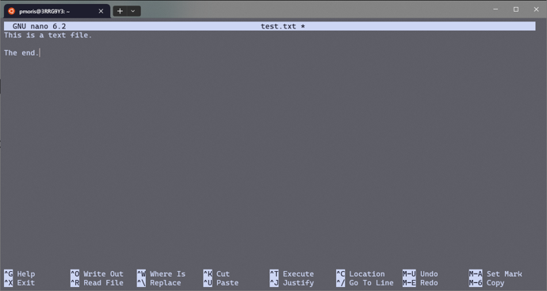

5 Working with files and directories
You can skip this section and proceed directly to the exercises if you are already familiar with basic commands like cp, mv, less and nano.
Remember that we have provided a list of helpful tips and hints in the appendix: Section A.1.
5.1 Examining files
5.1.1 cat: viewing short files
The most basic command for viewing a file is the cat <file> command. It simply prints all of the contents of a file to the screen (= standard output).
$ cd training/unix-demo
$ cat short.txt
On the Origin of Species
BY MEANS OF NATURAL SELECTION,
OR THE PRESERVATION OF FAVOURED RACES IN THE STRUGGLE FOR LIFE.
By Charles Darwin, M.A., F.R.S.,
Author of “The Descent of Man,” etc., etc.
Sixth London Edition, with all Additions and Corrections.cat on the file named long.txt and see what happens (Click me to expand!)
The entire file (in this case, the entirety of the Origin of Species by Charles Darwin) is printed to the screen. This works, but is not very easy to navigate. Especially if you consider the fact that this text is still just tiny compared to some of the files that we deal with in bioinformatics; it is only ~0.03% of the size of the (rather short) human Y chromosome (~60 Mbp) that we will look at next.
While cat is very useful, it is clearly not suitable for large text files. Since long files are very prevalent - and not only in bioinformatics - we need an alternative. Enter the less command.
5.1.2 less: viewing large files
This tool is suitable for streaming very large files which would otherwise crash a normal text editor or program like Excel. less will open the contents of the file in a dedicated viewer, i.e. your terminal and prompt will be replaced by a unique interface for the less tool. You can exit this interface by pressing q.
Using less, we can have a look at the (truncated) version of the human Y chromosome (in FASTA format):
$ less Homo_sapiens.GRCh38.dna.chromosome.Y.truncated.fa
lessless
- Use arrow keys to navigate.
spaceandbcan also be used to go forward and backwards, andpage up/page downwork as well. - Press
gto jump to the start of the file - Press
G(shift + g) to jump to the end of the file - Type
/followed by a string to search forward (?[string]for backwards search) andn/Nfor the previous/next match - To exit, press
Q - Use the help command for more info:
less --help
5.1.2.1 FASTA file format
The FASTA file format (usually denoted by a .fa or .fasta file extension) is very common in bioinformatics. As you can see, the FASTA files contain a long stretch of nucleotides, which in our case represent the sequence of the human Y chromosome (or at least the first ~6,000,000 basepairs). The sequence itself is usually broken up over multiple lines. At the very top of the file there is a header or identifier, which always starts with the > symbol, followed by a short description. FASTA files can store one or multiple sequences, each with their own header.
FASTA files are a type of text-based or plain text files, meaning that we can simply read them using a tool like cat or less. This seems obvious, but we will later encounter another file type, namely binary files, where this is not the case.
FASTA files are commonly used in genomics to store the reference genome of the organism we are studying. A reference genome can be used as a template to which we map (or align) new DNA sequence reads we have generated.
>Pf3D7_01_v3 | organism=Plasmodium_falciparum_3D7 | version=2020-09-01 | length=640851 | SO=chromosome
TGAACCCTAAAACCTAAACCCTAAACCCTAAACCCTGAACCCTAAACCCTGAACCCTAAA
CCCTAAACCCTGAACCCTAAACCCTAAACCCTGAACCCTAAACCCTGAAACCTAAACCCT
GAACCCTAAACCCTGAACCCTGAACCCTAACCCTAAACCCTAAACCTAAAACCCTGAACC
CTAAACCCTGAACCCTGAACCCTAAACCCTGAACCCTAAACCCTAAACCCTGAACCCTAA
ACCCTGAACCCTAAACCCTAAACCCTGAACCCTGAACCCTAAAACCTAAACCCTAAACCC
TAAACCCTAAACCCTGAACCTAAACCTAAAACCTAAAACCTAAAACCCTGAACCCTTACT
TTTCATTTCTTCTTCTTATCTTCTTACTTTTCATTCTTTACTCTTACTTACTTAGTCTTA
CTTACTTACTCTTACTTACTTACTCTTATCTTCTTACTTTTCATTTCTTAGTCTTACTTA
...5.1.3 head and tail: viewing the start or end of files
Sometimes we are not interested in viewing the entire file, but just the first few or last lines. The commands head and tail were created for exactly this use case. The basic usage is simply head <filepath>, but there again are a few optional flags that can alter the default behaviour.
| Command | Result |
|---|---|
head file |
Print the first 10 lines of a file |
tail file |
Print the last 10 lines of a file |
head -n # file |
Display the first # lines of a file |
tail -n # file |
Display the final # lines of a file |
tail -n +2 file |
Display all lines except for the first one (i.e., perform tail, but start at line 2) |
Let us inspect the first lines of one of the (uncompressed) FASTQ files in the unix-demo directory:
$ head PF0512_S47_L001_R1_001.fastq
@M05795:43:000000000-CFLMP:1:1101:16134:1717 1:N:0:47
TTGGTCAAGATCTTTTACATTCCATGCACACAAAAGAATTCTTCTACTTGTCTGATCCTTTTTCATTATATTTATTATCTTTTTTTATTTTTCCTCTCCTTTATTTTCATAATTATCATACATATTTTTATATTCATCACCTAAATGTCTCCATTTAAAACCATAAATAGTTCCTAATTCGTTAACTTCTCTATGACATAATTTTCTATTATCTCTTTCTCTTATCCACATCTCCGAGCCCACGAGACGTCGCACCCTCTCCTATGCCCTCTTCTGCTTGAAACACAAACGCCACCACCT
+
-8B<CGGFGGGDGGGGGEFGGGAFFEFCFGGDC888C,CF@@FFG,6FC,C,,,,<<,<<CCE,,<C,,,<6B,;B,<,<A@EEC+,:@,,94,,5549@?F,@@?D<,C,,9@,A;,C,9,A,:A=,>,9,9@;,,,,94,,,,9,9499=,9>,,,,,9+,9,,,9,,,493@,,,99+60++6==93=C+C++++6++4<=;=D+?=+42+43+33*?=;+**5*1*)0*108))18=):))))0)185)))1))--:)1*/*16)0/(01//8***()**((((((,(((/((,(,
@M05795:43:000000000-CFLMP:1:1101:20605:1731 1:N:0:47
GAAAAAGGAAGAGAATTGAACTTTTGGCAGCAAACTCAAACATTATAAGTGAAATTAAGATGCCCAAGTCTGTGCTCAATCTCATTTTTTGTTTTTGTGTTTTTCCTTCAATCTCTTCATGTATTCAGTTATTTTTAAT
+
-@CCCGGGGGGGGCGFG@<EFGGGGAFFFEGGC8FEF9,,;,CE,C,,,<,,,,<C,,,,<,,6;,,,;;C,<,6;C,,<,,:,:@,5,8+,,9:@+:,,9,9,99AE?,,,959AA?,9,,,994,,9=,9>ED,,,9
@M05795:43:000000000-CFLMP:1:1101:9135:1768 1:N:0:47
CGTTAAAATCTTGCTCCTCATCACTACTAACCTTTTGTTCATTCTCATCACAAATATTATCCTTATCTTCATTATCTACTTCATCTACATTATTTTTTAT5.1.3.1 FASTQ file format
Aside from FASTA files, another typical DNA sequence format is FASTQ (extension .fastq or .fq), which is used to store the raw output of high-throughput sequencing (like AmpliSeq) in the form of short read fragments. Like FASTA, it is text-based format, but instead of just identifiers and sequences, it also contains quality scores associated with each nucleotide. Each read is described by four lines of text. A single read might look like this:
@SEQ_ID
ACTACTAGGATTGAGGACGTCCTCCCAACAGGGAGTTGGTTGGGCGCCCGGTGCCGTCATGTCCGATCGCTATCTACGTCTAGTACTAGAGAATTATACA
+
"H85<EI4A533D;E1A56C@@GHI=BFGIIH6;F=3::HGF8C;9/>;EI?E4I(F?FID<CBAFFD69E:BB>+#<58H:/<>IE;881&'D':F<<H("| Line | Description |
|---|---|
| 1 | identifier: always starts with ‘@’ and contains information about the read (e.g., instrument, lane, multiplex tag, coordinates, etc. |
| 2 | The sequence of nucleotides making up the read |
| 3 | Always begins with a ‘+’ and sometimes repeats the identifier |
| 4 | Contains a string of ASCII characters that represent the quality score for each base (i.e., it has the exact same length as line 2) |
FASTQ files often come in pairs, which are usually named the same with a slightly different suffix (e.g., sample_1_R1.fastq and sample_1_R2.fastq). These pairs are reads of the same fragment in the opposite direction. In a nutshell, paired-end sequencing is used because the additional information provided by reads being paired can help with mapping repetitive regions of the genome.
.fastq.gz files in the training/data/fastq directory (Click me to expand!)
The less command most likely behaves as we expect it to, but if we were to try cat, head or tail, you would see a lot of gibberish being printed to your screen.
The reason is that these FASTQ files are compressed using gzip (which is why the file extension ends in .gz). Because of this, they are no longer plain text files, but compressed binary versions. We will learn more about compressed files and how to deal with them in a later section of this course. In a nutshell though, compressed files either need to be unpacked or they require a tool that was designed to handle them (e.g., zcat, zgrep, zless. In most linux distributions, zless is called automatically when you try to less a file with the .gz extension, which is why the text seemed normal.
5.1.4 wc: counting lines
Sometimes we’re not interested in the specific contents of a file, but only in how long it is in terms of text (not file size). For this we can use the wc command: it can count the number of lines, words and characters in a text file. By default, it prints all of this information, but by providing the -l flag, you can tell the command to only return the number of lines. Taking the example of our FASTQ file again, we see:
# number of lines, words and characters
$ wc PF0512_S47_L001_R1_001.fastq
582940 728675 69598721 PF0512_S47_L001_R1_001.fastq
# number of lines only
$ wc -l PF0512_S47_L001_R1_001.fastq
582940 PF0512_S47_L001_R1_001.fastqEach read in a FASTQ file consists of four lines (see Section 5.1.3.1). Therefore, we can simply divide the output of wc -l by four to figure out the number of reads. In this case: {582,940 \over 4} = 145,735 reads.
5.2 Editing files
You can edit files directly on the command line, i.e. without opening them in a text editor like Notepad(++) or VSCode, by using the nano command. This can come in quite handy in a variety of situations, like fixing small errors in your code before running it or to editing configuration files. Similar to less, nano will open a special editor interface where you can edit text files.

nano text editornano
- Your mouse pointer won’t work. Use arrow keys to move instead.
- To save, press
ctrl+o, followed by return/enter. - To exit, press
ctrl+x, followed by return/enter.
There exist many other editors, one of the most beloved, yet notorious ones, being vim. It is quite a bit more powerful, but also more complex. Even closing vim has become somewhat of a meme because it can be difficult to figure out (it’s <escape> followed by :q and `enter/return``).
5.3 Moving things around
Now that we have spent some time on inspecting files, let us move on to moving them around.
5.3.1 cp: copying files and directories
cp stands for copy and it does exactly what it says on the tin. It can copy files, as well as directories to a new location. For files, the syntax is as follows:
cp path/to/source_file path/to/destinationWhere source is the original file that you want to copy and destination is the new path where you want to place the copy. If the destination is a directory, the file will be placed inside of it with the same name as the original file. If the destination does not exist yet, it will be used as the new name for the copy.
When we want to move around directories instead of files, we need to add the -r flag (short for --recursive).
cp -r path/to/source_directory path/to/destination_fileYou can even copy multiple files at the same time!
$ cp file_1 file_2 file_3 /path/to/destination
$ ls /path/to/destination
file_1 file_2 file_35.3.2 Intermezzo: globbing and wildcards
Now seems like a good time to introduce the concept of the globbing and wildcards. Globbing allows you to perform operations on multiple files. By providing specific patterns, the shell will be able to expand them into a list of matching file names. The patterns are built using wildcards, one of the most common ones being the asterisk *.
How does this work? Well, * can represent any number of other characters. For example, the string *.txt can match all file names ending with .txt in your directory. Let’s look at a concrete example, using the ls command we saw earlier:
$ ls
Homo_sapiens.GRCh38.dna.chromosome.Y.truncated.fa PF0512_S47_L001_R1_001.fastq files_to_copy files_to_delete files_to_move long.txt short.txt penguins.csv
$ ls *.txt
long.txt short.txtAs you can see, we can make ls list only those files that match a particular pattern, instead of showing all the files in the directory. What happens behind the scenes is that *.txt is expanded to long.txt short.txt. This means that the command that the shell eventually sees is actually ls long.txt short.txt.
Similarly, we can combine wildcards with the new cp command.
$ cp *.txt ..
$ ls ..*.txt will be expanded to a list of all .txt files in the current working directory. The cp command will then try to copy each of those files to the destination, which is .. in this case. As we saw before, .. represents the parent directory of the current directory (see Section A.2).
This means that the command is equivalent to cp long.txt short.txt /absolute/path/to/parent_directory and will move all the .txt files in the current directory to its parent directory.
Another type of wildcard is [...]. This is used to supply a list of possible character matches. For example, the glob pattern [bcr]at would match bat, cat and rat.
There are a number of other wildcards, but even * alone will prove to be very useful. If you’d like to find out more, have a look at this resource. Also note that globbing looks similar to regular expressions, but while related, these two concepts behave slightly differently. We will not dive into regular expressions here though, but we will mention them again when we talk about the search tool grep.
To summarise, globbing is an extremely powerful tool that will allow you to more easily target multiple files. We will rely on the power of globbing a lot going forward.
5.3.3 mv Moving or renaming files and directories
The mv (move) command behaves very similar to the cp command, the main difference being that the former allows you to move rather than copy files and directories. Also note that mv is used to rename files as well.
# move around/rename a particular file
mv <source_file> <destination_file>
# move a directory
mv <path/to/source_directory> <path/to/destination_directory>5.4 Creation and destruction
We will end this section by teaching you how to create and delete files or directories.
5.4.1 Creating files
There are several ways of creating new files in Unix, but one of them is the nano command that we already introduced earlier. If you provide a file name that does not yet exist, nano will create the file for you.
$ ls
$ nano new_file.txt
# inside nano, use ctrl+x to save the file and then close the editor via ctrl+x
$ ls
new_file.txtAnother option is to use the touch /path/to/file command. This will just create a new empty file at the specified location.
5.4.2 mkdir: creating directories
mkdir stands for make directory and it does just that:
$ mkdir new_dir
$ ls
new_dirOne useful optional flag is -p/--parents: this allows you to create multiple nested (parent) directories in one go. For example, if we’re inside an empty directory, we could call:
mkdir -p my/new/multi/level/directoryAnd all the intermediate directories would be automatically created.
5.4.3 rm: removing things
Be careful while learning your way around the command-line. The Unix shell will do exactly what you tell it to, often without hesitation or asking for confirmation. This means that you might accidentally move, overwrite or delete files without intending to do so. For example, when creating, copying or moving files, they can overwrite existing ones if you give them the same name. Similarly, when a file is deleted, it will be removed completely, without first passing by a recycle bin.
No matter how much experience you have, it is a good idea to remain cautious when performing these types of operations.
For the purposes of learning, if you are using your own device instead of a cloud environment, we recommend that you work in a dedicated playground directory or even create a new user profile to be extra safe. And like always, backups of your important files are invaluable regardless of what you are doing.
The rm command (remove) is used to delete files and directories. Be warned though, once deleted, things are really gone. There is no recycle bin or trash folder where you can restore deleted items!
# for files:
rm <file path>
# for directories
rm -r <directory path>For files, this works as expected, but for directories you need to provide the -r flag (or --recursive). This tells Unix to remove the directory recursively, i.e. all of its contents need to be removed as well. If you don’t use this option, you will see the following warning:
rm directory
rm: cannot remove 'test/': Is a directorySometimes, files will be protected and you will get another warning message when you try to remove them. If you are really sure that you want to delete them, you can type y and press enter. Alternatively, you can cancel the operation (by entering n or by pressing ctrl+c) and try again, but this time providing the -f/--force option.
# create a new empty file
$ touch protected-file
# change its permissions so that it is protected against writing and deleting (see appendix for more info on file permissions)
$ chmod a-w protected-file
# try to remove it
$ rm protected-file
rm: remove write-protected regular empty file 'protected-file'? n
# use the --force flag
$ rm -f protected-file5.5 Exercises
- Create a new directory named “my_dir” inside the
./training/unix-demodirectory. Next, without usingcdfirst, create another directory namedmy_sub_dirinside of it. Finally, again without usingcd, create a final directory namedmy_sub_sub_dirinside of that one. - Read the last 20 lines of the FASTA file in the
./training/unix-demodirectory. - Create a new text file named
linesinsidemy_subdirusingnano. Store the number of lines of the filelong.txtinside. Then read it usingcatandless. - Navigate to the
files_to_copydirectory and copy its contents to themy_sub_dirdirectory. What is the relative path of the destination to use? - Move the file under
files_to_moveto its parent directory. - Remove all the files under
files_to_deleteusing a glob pattern. - Rename the directory
files_to_deletetoempty_dir. - List the contents of the
./training/unix-demodirectory.
5.6 Summary
- FASTA file format is used to store DNA sequences
- FASTQ file format is used to store sequence reads and their quality scores
- Compressed files (e.g.,
.gz) are smaller in file size, but are no longer plain text files and require special tools. - The permission of files can be set to prevent users from reading, writing or (re)moving them.
| Command | Result |
|---|---|
cat <path/to/file> |
print the content of files |
less <path/to/file> |
read the contents of (large) files in a special viewer |
head/tail <path/to/file> |
view the first or last lines of a file |
wc <path/to/file |
display the line/word/character count of a file |
nano <path/to/file> |
open a file (or create a new file) in the nano text editor |
cp [-r] <source> <destination> |
copy a file/directory to a new location |
mv [-r] <source> <destination> |
move a file/directory to a new location (or rename it) |
rm [-r] <path/to/file_or_directory> |
permanently remove a file/directory |
mkdir <path/to/directory> |
create a new directory |